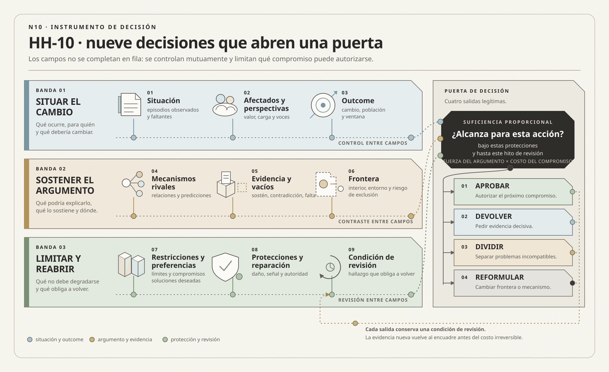

01
01Donald A. Schön
OBRA PRINCIPAL UTILIZADAFrame Reflection: Toward the Resolution of Intractable Policy ControversiesBasic Books, 1994 · con Martin Rein

Un problema profesional no es un dato descubierto ni una frase que resume síntomas.
Construir el problema: de síntomas a outcomes verificables
Ruta de lectura: problema, distinciones, decisiones, prueba, transferencia y preparación para Bloque 2.

Nota. SIN NUM. identifica los aparatos de orientación y referencia que no
integran la secuencia argumental.
Seis voces principales para ampliar, contrastar y discutir esta lectura.
01Basic Books, 1994 · con Martin Rein
 02
02SAGE, 1997 · con Nick Tilley
 03
03NIST AI 600-1, 2024 · equipo coautor
 04
04NIST AI 600-1, 2024 · equipo coautor
 05
05NIST AI 600-1, 2024 · equipo coautor
 06
06NIST AI 600-1, 2024 · equipo coautor
N10 no resume estas fuentes ni las convierte en una receta. Las pone en tensión para construir juicio profesional.
¿Cómo formular un problema que permita actuar sin convertir la primera explicación, o la solución preferida, en una verdad prematura?

El pedido nombra una respuesta; el encuadre debe explicar qué situación justifica intervenir.
Puede imaginarse una ciudad atravesada por un río. Todas las mañanas, miles de personas intentan llegar al centro por un puente antiguo. Las filas crecen, los colectivos pierden frecuencia y los medios publican fotografías de autos inmóviles. La explicación parece obvia: falta capacidad vial. El intendente anuncia entonces un nuevo puente. La frase tiene todo lo necesario para producir sensación de avance: un objeto visible, un presupuesto estimado, una fecha, una maqueta y un responsable.
Un equipo empieza a estudiar la obra. Mide caudales de tránsito, calcula resistencia, compara materiales y diseña accesos. Cada dato mejora la respuesta a la pregunta “¿cómo construir el puente?”. Ninguno demuestra todavía que esa sea la pregunta que conviene responder.
Una analista decide mirar episodios completos. No cuenta sólo vehículos: acompaña viajes. Descubre que gran parte de las personas cruza el río porque tres oficinas públicas, dos universidades y un hospital comienzan actividades dentro de la misma ventana de cuarenta minutos. Observa también que los colectivos quedan atrapados en la misma fila que los autos, que una línea de tren tiene capacidad disponible una hora antes y que muchos trámites exigen presencia aunque podrían distribuirse durante el día. Del otro lado del puente, un semáforo mal coordinado retiene la salida y hace que la congestión parezca originarse en la calzada.
La ciudad ya no tiene un único problema evidente. Puede tener una restricción de infraestructura, una concentración de horarios, una falla de coordinación del transporte, una regla administrativa o una combinación. Cada encuadre vuelve razonables intervenciones diferentes. Un segundo puente amplía capacidad, pero también puede atraer más autos y trasladar la cola al centro. Carriles exclusivos mejoran el transporte colectivo, pero requieren decidir quién pierde espacio. Escalonar horarios reduce el pico, aunque obliga a coordinar instituciones autónomas. Corregir el semáforo es barato y reversible, pero quizá sólo trate una parte de la demora.
El puente nuevo se construye. La obra termina dentro del presupuesto. La estructura supera las pruebas y la inauguración ocurre en fecha. El proyecto produjo todos sus outputs: planos, hormigón, accesos, señalización. Seis meses después, sin embargo, el tiempo de viaje vuelve al nivel anterior. ¿El proyecto fue exitoso? Desde la lógica de entrega, sí. Desde la situación que justificó la inversión, la respuesta es mucho menos cómoda.
El error no consistió necesariamente en construir. Tal vez el puente fuera parte de la respuesta. El error fue convertir la solución visible en definición del problema y, luego, utilizar la calidad de la obra como evidencia de que el problema había sido resuelto. La pregunta “¿qué se debe construir?” desplazó a otras: “¿qué condición debe cambiar?”, “¿para quién?”, “¿qué mecanismos producen la congestión?” y “¿qué observación obligaría a revisar la explicación?”.
Hay otra dificultad. Un buen encuadre no aparece porque alguien pronuncie la frase correcta en una reunión. Se construye comparando perspectivas y evidencia. Quien viaja en colectivo experimenta una demora; quien administra tránsito observa un flujo; quien atiende el hospital teme llegadas tardías; quien vive junto al acceso soporta ruido; quien financia la obra compara inversiones. Ninguna perspectiva agota la situación y no todas poseen la misma autoridad. Formular el problema distribuye voz, costo y posibilidad de actuar.
Por eso la historia del puente no enseña que las grandes obras sean equivocadas ni que toda decisión requiera investigación interminable. Enseña algo más exigente: antes de comprometer una respuesta costosa, se necesita un argumento que conecte situación, afectados, mecanismos, outcome, evidencia, límites y condición de revisión. Cuando la acción es reversible, ese argumento puede ser breve. Cuando consume opciones durante años, debe ser mucho más fuerte.
En sistemas de información, el “puente” suele llamarse plataforma, migración, integración, tablero, asistente conversacional o agente de inteligencia artificial. Las organizaciones pueden construirlo con excelencia y descubrir tarde que mejoraron la respuesta al problema equivocado. N10 trata precisamente sobre cómo impedir esa sustitución sin paralizar la acción.
La historia todavía admite una escena más. Antes de aprobar la obra completa, la ciudad decide utilizar seis semanas para probar el encuadre. No busca “demostrar que el puente no hace falta”; busca descubrir qué intervención merece consumir opciones durante décadas. Coordina durante diez días los horarios de dos oficinas, establece prioridad temporal para colectivos, corrige el semáforo de salida y registra viajes completos en lugar de contar únicamente vehículos. También entrevista a quienes no pueden modificar su horario, a comerciantes del acceso y a personal del hospital. Ninguna prueba reproduce exactamente una obra nueva, pero cada una permite observar mecanismos que la maqueta no muestra.
Los resultados no entregan una respuesta limpia. La coordinación horaria reduce el pico matinal, aunque parte de la demanda se desplaza a la tarde. El carril prioritario mejora el tiempo de los colectivos y empeora durante algunos minutos el de los automóviles. El ajuste del semáforo elimina una cola secundaria, pero no modifica los días de mayor concentración. Aparece además un dato que ningún conteo de calzada había revelado: muchas personas eligen el auto porque la combinación entre tren y colectivo no garantiza llegar antes del inicio de su turno. La confiabilidad, y no solamente la duración promedio, forma parte del outcome.
Con esa evidencia, el debate deja de ser “puente sí o puente no”. La ciudad puede formular una cartera: coordinación de horarios, confiabilidad del transporte público, gestión de accesos y, si la demanda residual lo justifica, infraestructura adicional. También puede declarar guardrails: no aumentar accidentes, no desplazar contaminación hacia barrios con menor capacidad de protesta y no empeorar el acceso de quienes carecen de alternativas. El nuevo puente sigue siendo una posibilidad, pero ya no funciona como definición del problema ni como única medida del progreso.
Obsérvese qué cambió. La ciudad no descubrió una esencia escondida llamada el verdadero problema. Construyó un argumento mejor porque relacionó episodios, poblaciones, mecanismos, alternativas y consecuencias. La investigación tuvo un límite temporal y una puerta de decisión. Al finalizar las seis semanas debía elegir entre ampliar pruebas, modificar el encuadre, combinar intervenciones o comprometer inversión. La revisabilidad no eliminó la responsabilidad de decidir; hizo explícito con qué evidencia se decidía y qué incertidumbre permanecía.
Ese movimiento es central para METSI. Construir un problema no equivale a demorar una solución hasta poseer certeza. Equivale a invertir una cantidad proporcional de trabajo para evitar que una respuesta costosa clausure demasiado pronto otras explicaciones. Un encuadre profesional debe permitir actuar ahora y aprender a tiempo: define una consecuencia que importa, localiza relaciones observables, preserva alternativas razonables y establece cuándo la evidencia obliga a volver a formularlo.

La dirección de Hotel Horizonte presenta una situación urgente. En temporada alta aumentaron las sobreventas, el check-in se demora y las reseñas mencionan información contradictoria. El PMS tiene once años, la aplicación para huéspedes nunca se implementó y el equipo comercial propone incorporar un asistente conversacional con inteligencia artificial. Hay una partida presupuestaria, un proveedor interesado y una fecha deseada.
Después de las primeras lecturas y prácticas, el equipo ya sabe que el sistema no se reduce al PMS. Reconstruyó episodios, identificó planillas, mensajes y reparaciones; escuchó a Recepción, Housekeeping, Reservas y huéspedes; observó diferencias en el significado de “disponible” y demoras entre canales. Esa evidencia, sin embargo, todavía no forma por sí sola un problema. Puede sostener explicaciones diferentes y dirigir inversiones incompatibles.
Una posibilidad es que el inventario se propague tarde. Otra es que las áreas utilicen estados semánticamente distintos. Una tercera es que las reglas de sobreventa acepten un nivel de incumplimiento que la organización no puede reparar. Una cuarta es que las promesas de canal excedan la capacidad operacional. Una quinta es que el problema dominante no sea la frecuencia de discrepancias, sino su duración y el trato desigual a quienes necesitan asistencia.
El desafío de N10 consiste en transformar evidencia dispersa en un argumento provisional para intervenir. No se busca una redacción elegante ni una formulación que cierre la conversación. Se busca una construcción capaz de orientar decisiones y, al mismo tiempo, declarar qué evidencia podría obligar a revisarla.
Un problema profesional no es un dato descubierto ni una frase que resume síntomas. Es un encuadre argumentado que relaciona una situación indeseada, actores afectados, mecanismos hipotéticos, outcomes, fronteras, restricciones, riesgos y evidencia disponible. El encuadre debe ser suficientemente específico para elegir qué investigar o cambiar, pero suficientemente revisable para admitir explicaciones rivales y resultados inesperados.
La calidad del problema se prueba por sus consecuencias: qué relaciones vuelve visibles, qué evidencia exige, qué alternativas permite comparar, qué daños impide ocultar y qué decisión cambiaría si el argumento resultara falso. Un encuadre que solo conduce a la solución ya elegida no organiza aprendizaje; racionaliza una preferencia.
METSI utiliza la expresión encuadre del problema para una síntesis didáctica construida a partir de varias tradiciones. Schön y Rein muestran que encuadrar selecciona qué se considera problemático y qué acción resulta defendible. Dorst explica que un encuadre conecta aspiraciones con una forma de comprender la situación. No debe confundirse con el concepto específico de problem frame de Michael Jackson, orientado a caracterizar clases recurrentes de problemas de desarrollo de software mediante dominios y fenómenos compartidos. En esta lectura, encuadre se usa en el sentido más amplio de seleccionar y organizar una situación para intervenir.
N09 produjo HH-09, un recorrido de experiencia que registra propósito, condiciones, señal visible, acción requerida, trabajo de soporte, evidencia crítica, modo de falla y alternativa o reparación en cada transición. Ese artefacto permite ver dónde una promesa cambia de significado, quién absorbe la coordinación y qué personas quedan expuestas. Todavía no decide cuál de esas relaciones debe gobernar la intervención.
N10 recibe ese recorrido como evidencia de entrada y construye HH-10, la ficha de encuadre provisional de Hotel Horizonte. HH-10 no resume HH-09 ni lo reemplaza. Selecciona una situación que importa, declara la población afectada, compara mecanismos rivales, formula un outcome verificable, establece protecciones, explicita vacíos de evidencia y abre una puerta de decisión. El pasaje exige perder detalle sin perder las contradicciones que podrían cambiar la decisión.
Esta lectura cierra el Bloque 1. Su resultado no es una solución ni un conjunto de requisitos, sino un problema suficientemente defendible para autorizar el próximo compromiso. N11 abrirá otro bloque y examinará cuándo un dato puede sostener una afirmación. N04 ya enseñó a distinguir observación, relato, dato, hipótesis y decisión dentro de una investigación. N11 retomará esa exigencia desde otra unidad: el dato como representación para modelar y decidir. N10 utiliza evidencia para encuadrar, pero no anticipa esa auditoría: deja identificadas las afirmaciones cuya fuerza deberá evaluarse después.

La ingeniería de software exige que un requisito de calidad sea claro, verificable y trazable. ISO/IEC/IEEE 29148:2018 formaliza la ingeniería de requisitos y su vínculo con necesidades, restricciones y trazabilidad. SWEBOK V4 e ISO/IEC/IEEE 15288:2023 sitúan esa práctica dentro de un ciclo de vida más amplio. METSI conserva la exigencia, pero retrocede un paso: antes de perfeccionar el requisito pregunta qué problema lo vuelve necesario y qué evidencia justificaría invertir en él. La trazabilidad no debería comenzar en una historia de usuario; debería poder llegar hasta una situación, una población afectada y una decisión.
“El sistema deberá responder consultas frecuentes mediante IA” puede verificarse técnicamente. Incluso podrían medirse precisión y latencia. Pero el requisito no explica por qué existen esas consultas. Tal vez la información esté dispersa; quizá las políticas sean contradictorias; puede que una parte de las personas no encuentre una vía de asistencia. Automatizar respuestas atacaría mecanismos distintos en cada caso y podría ocultar el último. La calidad formal del requisito no compensa la debilidad del encuadre.
El avance conceptual de esta lectura consiste entonces en ir desde requerimientos hacia atrás y desde outcomes hacia adelante. Hacia atrás, se reconstruyen evidencia, afectados, mecanismo y autoridad. Hacia adelante, se pregunta qué cambio observable demostraría que la intervención produjo un resultado valioso sin violar protecciones. Solo después tiene sentido decidir requisitos, arquitectura y pruebas.
El pedido inicial contiene decisiones políticas y comerciales: reemplazar el PMS, lanzar una aplicación, incorporar un asistente conversacional. No es información inútil. Revela urgencia, presupuesto, expectativas, actores con autoridad y una narrativa de futuro. Pero no demuestra qué mecanismo produce la situación ni qué outcome debería priorizarse.
Un síntoma es una manifestación observable: sobreventas, espera, reseñas negativas, correcciones manuales. Puede medirse, pero no explica por qué ocurre. Llamar “problema” al síntoma suele inducir una respuesta simétrica: si hay demora, acelerar; si hay error, validar; si hay contactos, automatizar. Esa simetría es seductora porque transforma una observación en un requisito sin atravesar una explicación.
El mecanismo es una relación hipotética que conecta condiciones y consecuencia. Por ejemplo: dos canales aceptan reservas usando versiones de inventario que pueden divergir durante cierto intervalo; cuando la demanda se concentra, la demora supera el margen de seguridad y se confirman más habitaciones que las asignables. Este mecanismo permite buscar evidencia y diseñar intervenciones. También puede resultar falso.
El problema integra síntomas y mecanismos dentro de una consecuencia relevante para alguien. “El PMS es lento” es una evaluación de un componente. “El hotel no puede sostener algunas promesas de alojamiento porque estados y autoridades se coordinan de manera inconsistente, lo que genera correcciones tardías y daño desigual” es un encuadre. Todavía necesita evidencia, pero declara el fenómeno, los afectados y la clase de relación que debe investigarse.
La solución es una intervención posible. Puede ser tecnológica, organizacional, contractual o combinada. No debe desaparecer del análisis: algunas soluciones son restricciones reales, por ejemplo una compra ya firmada, y otras constituyen preferencias legítimas. El error consiste en utilizar la solución como prueba del problema. Que exista presupuesto para un PMS no demuestra que el PMS explique el outcome.
Un tablero muestra una mediana de dieciocho minutos entre la llegada de una persona y la entrega de la habitación. En los episodios más lentos, el percentil 95, la demora supera los cuarenta y siete minutos. La organización podría presentar ese mismo conjunto de observaciones de cuatro maneras. Cada formulación es gramaticalmente correcta, pero no cumple la misma función profesional.
Pedido: “Necesitamos automatizar el check-in”. La frase propone una dirección de acción. Puede condensar una intuición valiosa y hasta una restricción estratégica: quizá la dirección ya decidió ofrecer autoservicio. Sin embargo, todavía no explica qué parte de los dieciocho minutos resulta evitable, qué población se beneficiará ni qué condiciones debe sostener el hotel para que la automatización no traslade la espera a otra instancia.
Síntoma: “El check-in demora demasiado”. Esta formulación identifica una experiencia observable, pero “demasiado” exige una comparación. Dieciocho minutos pueden ser intolerables para una reserva prepagada y razonables para una llegada grupal con cambios de última hora. Además, una mediana mezcla episodios muy distintos. Un huésped que espera dos minutos y luego recibe una habitación incorrecta no representa el mismo problema que otro que espera veinticinco minutos porque se verifica una excepción legítima de identidad.
Hipótesis de mecanismo: “La demora aumenta cuando Recepción debe reconciliar una promesa comercial con estados de habitación, pago e identidad que llegan en momentos diferentes y cuya autoridad no está acordada”. Ahora aparecen relaciones que pueden contrastarse. El equipo puede reconstruir cuándo se declara cada estado, qué evidencia observa Recepción, qué excepciones requieren autorización y qué parte de la demora ocurre antes o después de consultar el PMS. La hipótesis también puede ser refutada: quizá la mayor espera no dependa de reconciliación, sino de capacidad física, entrenamiento, fallas de cerraduras o concentración de llegadas.
Problema provisional orientado a outcome: “Hotel Horizonte no consigue completar de forma confiable el ingreso de ciertas reservas dentro de una ventana acordada porque, ante discrepancias de disponibilidad, pago o identidad, el personal debe reconstruir y autorizar manualmente una promesa fragmentada. La consecuencia se concentra en llegadas de alta demanda y en personas que necesitan asistencia. La intervención deberá reducir el tiempo hasta una decisión correcta sin aumentar asignaciones erróneas, exclusión, exposición de datos ni trabajo de reparación”. Esta formulación todavía no es una verdad; es un argumento que declara qué debe cambiar, para quién, por qué podría ocurrir y qué deterioros no serán aceptados.
Las cuatro frases no compiten por estilo. El pedido coordina una preferencia; el síntoma orienta la observación; la hipótesis dirige la búsqueda de evidencia; el problema provisional autoriza una decisión bajo condiciones explícitas. Confundirlas produce dos errores simétricos. El primero consiste en descalificar el pedido porque “no es el problema”: se pierde información sobre autoridad, urgencia y restricciones. El segundo consiste en adoptar el pedido como diagnóstico: la solución queda protegida frente a evidencia adversa.
Una prueba sencilla consiste en completar, antes de redactar requisitos, esta secuencia: “El pedido es…; la observación disponible es…; el mecanismo supuesto es…; por eso la condición que debe cambiar es… para esta población… sin deteriorar…”. Si el equipo no puede distinguir cada tramo, todavía no posee un problema suficientemente construido para comprometer una intervención costosa. Sí puede, en cambio, autorizar una investigación breve que permita completar o revisar la secuencia.
Una formulación se vuelve útil cuando cambia lo que el equipo hace al comenzar. Hotel Horizonte dispone de dos horas antes de una reunión con el proveedor. Si adopta el pedido como problema, utilizará ese tiempo para enumerar funciones del autoservicio: lectura de documentos, firma digital, asignación de habitación, emisión de llave y conexión con el PMS. El trabajo puede ser técnicamente competente, pero toda la evidencia quedará organizada alrededor de una solución que ya ingresó al análisis como conclusión.
Si adopta el síntoma como problema, “el check-in demora demasiado”, probablemente comparará promedios, buscará pasos lentos y propondrá eliminar tareas. Ese enfoque permite hallar desperdicios reales, aunque corre el riesgo de tratar igual una espera producida por captura duplicada y otra causada por una excepción de identidad que exige cuidado. Reducir segundos no equivale necesariamente a reducir el tiempo hasta una decisión correcta.
La hipótesis de mecanismo conduce a otra agenda. El equipo selecciona seis episodios: dos ingresos normales, dos con discrepancias de habitación y dos con pago o identidad no resueltos. Para cada uno registra la promesa recibida, el primer estado disponible, quién detectó la contradicción, qué sistema o persona tenía autoridad, cuánto duró cada espera y qué reparación fue necesaria. No pretende obtener representatividad estadística en dos horas. Busca comprobar si la relación propuesta existe, si explica episodios distintos y qué observación la debilitaría.
El problema provisional agrega una exigencia. Antes de la reunión, el equipo debe declarar qué outcome espera modificar y qué deterioros no aceptará. Puede proponer: “reducir el tiempo desde la llegada hasta una asignación correcta en reservas con discrepancias, sin aumentar errores de identidad, habitaciones entregadas en condiciones inadecuadas ni dependencia de una única persona supervisora”. Esa frase permite conversar con el proveedor de otra manera. En lugar de preguntar solamente qué funciones ofrece el producto, pregunta qué estados necesita, cómo representa excepciones, qué decisiones automatiza, qué rastros conserva, quién puede corregir y cómo se revierte una acción equivocada.
Las primeras dos horas no producen el diagnóstico definitivo. Producen una diferencia verificable entre cuatro comienzos posibles. Si los episodios muestran que la espera ocurre antes de toda consulta al PMS, la hipótesis de integración pierde fuerza. Si la demora aparece cuando dos áreas usan definiciones incompatibles, el equipo debe trabajar semántica y autoridad, aunque también cambie tecnología. Si la mayoría de los casos depende de concentración física de llegadas, quizás la capacidad y el diseño del servicio pesen más. Si el daño se concentra en personas que necesitan asistencia, el promedio general deja de ser el outcome suficiente.
Esta prueba también ayuda a decidir el siguiente nivel de inversión. Una señal clara puede justificar un piloto reversible; explicaciones todavía equivalentes pueden exigir observación adicional; una restricción contractual puede convertir la pregunta desde “qué solución elegir” hacia “cómo integrar, limitar riesgo y preservar salida”. El encuadre no gana valor porque su redacción parezca completa. Lo gana cuando distribuye mejor la atención, hace comparables las alternativas y permite que evidencia adversa cambie el curso antes del costo irreversible.
Donald Schön y Martin Rein mostraron que los conflictos de política no se explican únicamente por intereses opuestos; también dependen de marcos diferentes que seleccionan hechos, mecanismos y criterios de éxito. En diseño, Kees Dorst describe el framing como la construcción de una relación entre una forma de comprender la situación y un principio de acción. Estas perspectivas ayudan a abandonar la idea de que el problema correcto espera ser descubierto como un objeto estable.
Eso no vuelve equivalente cualquier formulación. Un encuadre puede ser más o menos defendible según:
El argumento puede representarse con cinco piezas. Afirmación: qué situación constituye el problema. Evidencia: qué episodios, datos y testimonios la sostienen. Garantía: por qué esa evidencia permite inferir el mecanismo. Alternativas: qué otras explicaciones siguen siendo plausibles. Condición de revisión: qué hallazgo cambiaría el encuadre. Esta estructura, inspirada en el modelo de argumentación de Toulmin, evita que una frase gane autoridad solo por su tono técnico.
Completar casilleros no garantiza el argumento. Un equipo puede escribir “causa: mala integración” sin demostrar causalidad; “usuario: huésped” sin reconocer personal afectado; “outcome: mejorar experiencia” sin criterio verificable. La plantilla sirve si obliga a discutir relaciones. Si se transforma en ceremonia, produce un problema administrativamente completo y epistemológicamente vacío.
Ejemplo breve, gimnasio. “Se necesita una aplicación” puede ocultar que las personas abandonan porque los turnos cambian sin aviso. El pedido nombra un objeto; el problema debe explicar el outcome.
Afirmación: las sobreventas y esperas se producen principalmente porque el inventario y los estados de habitación se propagan tarde entre PMS, channel manager y OTA.
Evidencia esperable: trazas con demoras superiores a la ventana de seguridad; discrepancias concentradas en integraciones o períodos específicos; reducción de incidentes al reconciliar o cerrar temporalmente ventas.
Intervenciones plausibles: integración, idempotencia, reconciliación, cupos conservadores, observabilidad y eventual reemplazo de componentes.
Afirmación: las áreas y sistemas emplean estados equivalentes solo en apariencia; nadie tiene una regla común y autoridad inequívoca para declarar cuándo una habitación es vendible, limpia, asignable o fuera de servicio.
Evidencia esperable: casos con sistemas actualizados pero decisiones contradictorias; definiciones diferentes; correcciones que dependen de supervisión; conflictos recurrentes después de cambios manuales.
Intervenciones plausibles: rediseño de estados, eventos, autoridad, reglas y coordinación; cambios de software como soporte, no necesariamente como causa central.
Afirmación: la organización acepta sobreventa y promesas tempranas para optimizar ocupación, pero carece de capacidad y criterios para reparar cuando el supuesto de no-show falla.
Evidencia esperable: incidentes correlacionados con reglas de ocupación y no con fallas técnicas; decisiones comerciales explícitas; compensaciones variables; carga concentrada en ciertos turnos o sedes.
Intervenciones plausibles: modificar política, segmentar riesgo, reservar capacidad de contingencia, mejorar detección y estandarizar reparación.
Afirmación: el servicio estándar funciona, pero la experiencia se deteriora cuando aparecen necesidades de accesibilidad, reservas intermediadas, cambios tardíos o identidades ambiguas; el sistema fue diseñado para el caso modal y traslada la complejidad a huéspedes y personal.
Evidencia esperable: promedios aceptables con colas largas o daño concentrado; contactos repetidos; abandonos; intervenciones manuales no registradas; diferencias por canal, idioma o necesidad de asistencia.
Intervenciones plausibles: rediseño de recorridos, capacidad humana, alternativas accesibles, reglas de escalamiento y reparación, además de tecnología.
Ningún encuadre es neutral. Cada uno define qué cuenta como evidencia, qué actores aparecen y qué solución parece sensata. La tarea no es votar el favorito. Es identificar qué evidencia puede discriminar entre ellos y si conviene mantener un problema compuesto o separar mecanismos que requieren respuestas diferentes.
La primera versión de HH-10 conserva los cuatro encuadres sin elegir todavía uno como causa principal. En el campo situación registra dos sobreventas, una demora de ingreso y una reparación informal provenientes de HH-09. En afectados distingue huéspedes, Recepción, Housekeeping y Comercial. En mecanismos rivales anota latencia, incompatibilidad semántica, política de sobreventa y excepción invisibilizada. Para cada mecanismo incorpora una predicción y una observación capaz de debilitarlo.
El efecto práctico es inmediato. La reunión con el proveedor deja de comenzar con una lista de funciones y comienza con cuatro preguntas discriminantes: dónde nace la divergencia, qué significa cada estado, quién autorizó el riesgo comercial y qué excepciones desaparecen del registro. HH-10 permanece abierto porque la evidencia disponible autoriza investigación, no contratación. Esa diferencia entre acción permitida y decisión todavía no autorizada es parte del artefacto.
En 2026 muchas iniciativas llegan formuladas como una solución inevitable: “se necesita un copiloto”, “hay que automatizar con agentes”, “los competidores ya usan IA”. El pedido puede expresar una oportunidad real, presión del mercado o una decisión estratégica legítima. Pero sigue sin demostrar qué problema conviene resolver ni que la IA sea la alternativa de mayor valor.
La evidencia reciente obliga a desconfiar tanto del rechazo automático como del entusiasmo sin encuadre. El informe DORA 2025 describe la IA aplicada al desarrollo de software como un amplificador de las capacidades y debilidades organizacionales existentes. El Future of Jobs Report 2025 registra una expectativa amplia de transformación por IA y, a la vez, identifica las brechas de capacidades como una barrera central. Ambos datos apuntan a la misma pregunta metodológica: ¿qué sistema organizacional recibirá la tecnología y qué mecanismo se espera que cambie?
En Hotel Horizonte, un asistente puede reducir el tiempo de búsqueda si la política está vigente y la consulta es informativa. Puede también distribuir con mayor velocidad una regla contradictoria, ocultar la necesidad de asistencia o ejecutar una modificación para la que no existe autoridad clara. “Usar IA” no constituye un mecanismo causal. La frase debe completarse: para esta población, frente a esta situación, se espera que esta capacidad cambie este mecanismo, produzca esta evidencia y se detenga bajo estas condiciones.
El perfil de inteligencia artificial generativa del NIST AI RMF exige gestionar riesgos según contexto, medición y gobernanza, no según la mera presencia de un modelo. El Reglamento de Inteligencia Artificial de la Unión Europea agrega obligaciones según uso y riesgo, entre ellas requisitos de transparencia para ciertas interacciones. Estos marcos no diagnostican el problema de Hotel Horizonte. Sí impiden tratar autoridad, trazabilidad, supervisión y salida como detalles posteriores a la compra.
El encuadre contemporáneo también incluye la alternativa. Una búsqueda mejorada, una política unificada, un formulario claro, una integración determinística o más capacidad humana pueden superar a un modelo generativo. La comparación no degrada la innovación; evita obligar a una tecnología costosa y probabilística a resolver un problema de información, coordinación o autoridad que podría tratarse de manera más simple.
Ejemplo breve, beca. “Baja postulación” admite mecanismos rivales: desconocimiento, requisitos inaccesibles o falta de confianza. Cada uno exige evidencia e intervención distintas.
Un output es un producto de la intervención: nueva aplicación, integración, capacitación, tablero o procedimiento. Puede verificarse mediante entrega. Un outcome es un cambio en capacidad, conducta o condición relevante: menos promesas incumplidas, menor duración de discrepancias, reparación más rápida o menor carga desigual. El impacto refiere a consecuencias más amplias y de largo plazo, como confianza, sostenibilidad económica o inclusión. El valor expresa la importancia atribuida por actores y no puede reducirse siempre a una única métrica.
La distinción previene un error común: declarar éxito porque el proyecto produjo aquello que prometió, aunque la situación no mejore. Implementar un asistente conversacional es output. Reducir consultas repetidas sin aumentar acciones equivocadas, exclusión ni carga de escalamiento es outcome. Aumentar conversión puede ser valor comercial y deteriorar confiabilidad para huéspedes; el conflicto debe hacerse visible.
Un outcome útil especifica:
Para Hotel Horizonte: “reducir la proporción y duración de llegadas que requieren corregir una promesa de habitación, especialmente en reservas de terceros y casos de asistencia, sin aumentar rechazos, exposición de datos, retrabajo posterior ni perjuicio al personal”. Esta frase todavía no fija una meta numérica porque la línea de base no está validada. Sí declara fenómeno, población, distribución y límites.
El outcome no reemplaza la teoría causal. Una métrica puede mejorar por temporada, selección de casos o desplazamiento de trabajo. Se necesita explicar por qué una intervención podría producir el cambio y qué señales de equilibrio revelarían efectos adversos. Sin mecanismo, el outcome se convierte en deseo medible. La relación entre contexto, mecanismo y resultado retoma la evaluación realista de Pawson y Tilley. El modelo lógico de la W. K. Kellogg Foundation ayuda a explicitar esa cadena, pero no prueba por sí solo que la relación sea causal.
Un encuadre puede orientar correctamente hacia un outcome y producir una intervención dañina si ignora cómo se obtiene. Reducir el tiempo de check-in expulsando casos complejos de la medición mejora el promedio. Disminuir contactos cerrando canales de ayuda mejora eficiencia aparente. Elevar ocupación mediante sobreventa aumenta ingreso esperado y también incumplimiento.
Las protecciones, también denominadas guardrails, son condiciones que limitan una búsqueda de mejora. No son una lista genérica de valores. Deben conectarse con mecanismos de daño plausibles y contar con señales. Para el hotel pueden incluir: no aumentar reubicaciones involuntarias; no deteriorar accesibilidad; no incrementar correcciones después del check-in; no transferir trabajo no reconocido a Recepción; no ejecutar cambios sensibles sin identidad y autoridad suficientes.
Un anti-outcome nombra aquello que la intervención no debe producir: por ejemplo, menos espera visible a costa de más abandono silencioso. Formularlo obliga a imaginar cómo una métrica podría ser manipulada o cómo una solución desplazaría el problema. También ayuda a diseñar señales de equilibrio antes de que el equipo se enamore del resultado principal.
Los límites absolutos son poco realistas cuando toda opción tiene costo. “Ningún error” puede conducir a bloquear el servicio. En su lugar, conviene declarar severidad, distribución, reversibilidad y capacidad de reparación. Ciertos errores informativos tolerables no equivalen a una cancelación errónea; una espera breve no equivale a negar una necesidad de accesibilidad. El criterio debe reflejar consecuencias, no solamente frecuencia.
Un problema es revisable cuando declara de antemano qué observación sería incómoda. Esta condición combate el sesgo retrospectivo: sin ella, toda evidencia termina reinterpretada para sostener la hipótesis original.
Para el encuadre de latencia tecnológica podría registrarse: “si la mayoría de episodios ocurre con estados ya sincronizados, se reducirá el peso de la integración y se examinarán semántica, autoridad o política”. Para el encuadre comercial: “si los incidentes no se concentran en ventanas de alta ocupación ni reglas de sobreventa, se revisará el mecanismo”. Para el de excepciones: “si la distribución por población y canal no muestra diferencias relevantes, se buscará otra fuente de variabilidad”.
La evidencia suficiente depende de la decisión. No se necesita demostrar causalidad definitiva para decidir dos semanas de observación o una prueba piloto reversible. Sí se necesita evidencia mayor para firmar una migración irreversible, retirar un canal accesible o delegar cancelaciones a un agente. La calidad metodológica consiste en hacer proporcional el compromiso a la fuerza del argumento y al costo de equivocarse.
Conviene separar tres clases de señales:
Las señales no prueban por sí solas el mecanismo. Una divergencia puede correlacionarse con demanda alta sin causarla. Por eso el expediente combina trazas, episodios, observación, decisiones y comparación temporal. Cuando una afirmación supera lo que la evidencia permite, el encuadre debe marcarla como hipótesis.
Ejemplo breve, guardia. Reducir el tiempo promedio puede dejar peor a casos complejos. El outcome necesita población y protecciones, no sólo una cifra agregada.
Encuadrar distribuye poder. La persona que define el fenómeno decide qué trabajo cuenta, qué daño aparece y qué opciones se consideran razonables. Si Dirección formula “baja adopción de autoservicio”, el personal puede aparecer como resistencia y el huésped como déficit de conducta. Si se formula “dificultad para completar tareas sin asistencia”, pueden emerger barreras de diseño, lenguaje o identidad. Ninguna redacción es inocente.
Esto no exige consenso total. Los actores pueden tener intereses incompatibles. Un proceso participativo serio conserva desacuerdos y objeciones en lugar de promediar una frase vacía. Conviene registrar:
En Hotel Horizonte, Comercial puede valorar ocupación, Recepción reparabilidad, Housekeeping estabilidad de prioridades, Finanzas conciliación y huéspedes confiabilidad. “Mejorar la experiencia” no resuelve la tensión. El encuadre debe explicar cómo se relacionan esos outcomes y qué intercambios son aceptables.
La IA agrega un riesgo particular: generar resúmenes convincentes que uniforman voces diferentes. Un modelo puede clasificar testimonios o sugerir hipótesis, pero no posee legitimidad para decidir qué daño importa ni qué discrepancia debe borrarse. Su uso debe conservar procedencia, citas, contradicciones y revisión humana real.
La segunda versión de HH-10 formula como outcome reducir la frecuencia y duración de correcciones evitables en reservas intermediadas y situaciones que requieren asistencia. No promete todavía un porcentaje, porque la línea de base no está validada. Agrega cuatro protecciones observables: no aumentar reubicaciones involuntarias, no ocultar abandono, no transferir carga no reconocida al personal y no ejecutar cambios sensibles sin autoridad suficiente.
La ficha registra además quién puede aceptar intercambios y quién puede detener la intervención. Dirección puede autorizar una prueba; Comercial no puede redefinir por sí solo qué habitación es asignable; Recepción necesita una vía de reparación; las personas afectadas deben poder cuestionar una decisión automatizada. La decisión todavía no autorizada sigue siendo contratar o migrar. El hito siguiente consiste en discriminar mecanismos y validar una línea de base, no en seleccionar proveedor.


Un problema es revisable cuando declara qué evidencia podría volverlo falso.

El instrumento no se completa necesariamente en orden. Cada campo funciona como una pregunta de consistencia.
Un encuadre de calidad no necesita llenar cada campo con certeza. Debe diferenciar evidencia, inferencia y pregunta abierta. Puede contener un mecanismo principal y otros rivales. Puede declarar que todavía no existe línea de base confiable. La honestidad sobre vacíos aumenta su utilidad; la vaguedad sin plan de evidencia la reduce.
Los campos no deben revisarse de manera aislada. Un cambio en uno obliga a examinar los demás. Si la población prioritaria pasa de “todas las llegadas” a “reservas intermediadas que requieren asistencia”, probablemente cambien el outcome, la muestra, los mecanismos y las protecciones. Si un contrato impide modificar el canal durante un año, la restricción altera las alternativas pero no convierte al contrato en explicación causal. Si una nueva traza descarta latencia, debe revisarse el mecanismo y quizá la frontera, no solamente reemplazar una palabra.
Una comprobación rápida consiste en recorrer cuatro coherencias:
Por ejemplo, si el mecanismo afirma que definiciones incompatibles producen asignaciones erróneas, una campaña de capacitación puede ayudar solo si la inconsistencia reside en interpretación y las personas poseen autoridad para resolverla. Si las aplicaciones codifican reglas distintas, capacitar aumenta responsabilidad individual sin cambiar la causa. Del mismo modo, una integración no resuelve un conflicto de autoridad aunque elimine demora.
El encuadre debe resistir una lectura adversarial. Un colega debería poder preguntar: “¿qué otra explicación produce la misma evidencia?”, “¿quién podría empeorar si esto mejora?” y “¿qué decisión conservarías si el mecanismo fuera falso?”. Si el equipo no puede responder, todavía tiene una narrativa, no un problema defendible.
Otra prueba consiste en imaginar que, dentro de seis meses, el proyecto entregó todos sus outputs y el outcome no cambió. El equipo debe proponer desde ahora dos explicaciones para ese fracaso: una en la que la intervención no modificó el mecanismo y otra en la que la medición ocultó el resultado real. Si no puede hacerlo, el encuadre probablemente une solución y éxito mediante una garantía tácita. Esta anticipación del fracaso mejora el diseño de evidencia y evita que la evaluación futura se limite a justificar la inversión.
Ejemplo breve, agente de IA. Una demostración contesta bien preguntas frecuentes. Eso no demuestra que deba cancelar reservas: cambian acción, autoridad, daño y condición de salida.
Llegar a N10 después de las lecturas anteriores cambia la calidad de la formulación. N01 distinguió metodología de receta y conservó una relación defendible entre propósito, prácticas, evidencia y decisiones. N02 amplió la unidad de análisis: una aplicación puede funcionar y el sistema de información organizacional puede fallar. N03 trazó fronteras y retroalimentaciones; N04 distinguió datos de evidencia; N05 hizo visibles conocimiento, poder y consecuencias.
N06 introdujo el valor de información y la necesidad de investigar antes de consumir opciones costosas. N07 mostró que una entrevista vale por los episodios, rastros y decisiones que permite reconstruir, no por la cantidad de frases obtenidas. N08 separó trabajo prescripto de trabajo real y reveló adaptaciones que sostienen capacidades. N09 recorrió la experiencia de extremo a extremo e incorporó accesibilidad, distribución del daño y reparación.
Todo ese material puede acumularse sin producir todavía un problema profesional. Un repositorio con entrevistas, mapas, métricas, trazas y observaciones no decide qué relación importa ni qué cambio justifica actuar. La evidencia adquiere función cuando entra en un argumento que declara:
Este pasaje no es un resumen administrativo. Es una operación de síntesis que inevitablemente pierde detalle. El criterio consiste en perder lo que no cambia la decisión y conservar contradicciones capaces de modificarla. Si un mapa elimina una excepción porque ocurre pocas veces, puede borrar el mecanismo de mayor severidad. Si un promedio sustituye la distribución, puede presentar como mejora una experiencia peor para quienes necesitan asistencia. Si una frase de Dirección reemplaza episodios, puede transformar autoridad jerárquica en autoridad epistémica.
En Hotel Horizonte, por ejemplo, saber que el PMS registra tarde algunos cambios es relevante. Saber que Recepción repara discrepancias mediante mensajes también. Pero ninguna observación aislada autoriza a afirmar que la migración sea la intervención dominante. El encuadre debe explicar cómo se conectan propagación, significado de estados, política de sobreventa, trabajo de excepción y experiencia de llegada. También debe permitir descubrir que no se conectan y que conviene separar problemas.
Una señal de madurez consiste en poder escribir dos formulaciones rivales usando la misma evidencia sin caricaturizar ninguna. Si todo el material admite una sola lectura desde el comienzo, puede haber una causa realmente clara; pero también puede haber muestreo sesgado, preguntas confirmatorias o una frontera elegida alrededor de la solución. La pluralidad inicial no es indecisión: es una protección contra el cierre prematuro.
El resultado operativo de N10 no es un texto bonito. Es una decisión sobre la calidad del encuadre. Un equipo, un patrocinador o un comité debería poder tomar al menos cuatro caminos legítimos.
Aprobar el encuadre para el próximo compromiso. No significa declarar que el problema es verdadero para siempre. Significa que el argumento tiene evidencia proporcional, mecanismos plausibles, outcome y protecciones suficientes para autorizar una acción concreta: observar, realizar una prueba piloto, contratar una prueba o diseñar una migración. La aprobación debe indicar hasta dónde alcanza.
Devolverlo por falta de evidencia decisiva. La devolución no debería pedir “más información” en general. Debe identificar qué incertidumbre impide decidir y qué evidencia puede reducirla. Por ejemplo: reconstruir veinte episodios para distinguir si la discrepancia nace antes o después de la sincronización. Una devolución sin pregunta es burocracia; con criterio, es diseño de investigación.
Dividir el problema. Dos outcomes pueden compartir síntomas y requerir autoridades distintas. La sobreventa comercial, la demora operativa y una barrera de accesibilidad pueden coincidir en una llegada fallida, pero no necesariamente responden al mismo mecanismo. Separar permite intervenir sin obligar a un proyecto único a resolver tensiones incompatibles. El riesgo inverso es fragmentar tanto que desaparezca la promesa de servicio completa.
Reformular la frontera o el mecanismo. La evidencia puede mostrar que el objeto inicial era demasiado pequeño, el PMS cuando importaban reglas y autoridad, o demasiado grande, “la experiencia del huésped” cuando la decisión trataba un evento concreto. Reformular no es fracasar: es usar la investigación para cambiar el argumento antes del costo irreversible.
Estas salidas evitan una falsa alternativa entre aprobar y bloquear. También hacen visible que cada puerta consume opciones diferentes. Autorizar una observación conserva casi todas; firmar una plataforma durante cinco años, migrar datos o permitir que un agente ejecute cancelaciones reduce reversibilidad. La fuerza necesaria del encuadre crece con ese compromiso.
La puerta puede expresarse en una frase verificable: “Con la evidencia disponible, este encuadre es suficiente para autorizar esta acción, bajo estas protecciones y hasta este hito de revisión”. Si el equipo no puede completar la frase, probablemente esté confundiendo acuerdo sobre la urgencia con acuerdo sobre el problema.
> Hotel Horizonte no sostiene de manera consistente ciertas promesas de reserva y llegada entre canales, áreas y proveedores. En una parte de los episodios, estados y condiciones críticas se registran con significados, tiempos o autoridades diferentes; el personal repara las discrepancias mediante trabajo informal que reduce el daño inmediato pero introduce carga, exposición y dependencia. Las consecuencias se concentran en reservas intermediadas, momentos de alta demanda y situaciones que requieren asistencia, aunque la distribución todavía debe validarse. La intervención busca reducir la frecuencia y duración de correcciones evitables sin disminuir accesibilidad, continuidad, capacidad de excepción ni responsabilidad frente al huésped. Antes de comprometer una solución se distinguirá el peso relativo de integración, semántica, política comercial y capacidad de reparación. Si los episodios no muestran divergencia entre esos mecanismos, el encuadre deberá reformularse.
Esta formulación es más larga que un eslogan porque cumple una función de coordinación. No afirma que todas las discrepancias compartan causa ni que el PMS sea irrelevante. Conserva la solución como alternativa y concentra la investigación en mecanismos que pueden cambiar la decisión.
El encargo asociado podría autorizar tres semanas de trabajo: reconstruir una muestra estratificada de episodios, observar dos franjas críticas, comparar estados y autoridades, establecer línea de base y diseñar una acción reversible. No autoriza todavía contratar la plataforma ni prometer un porcentaje de mejora.
Una dirección hospitalaria observa tiempos de espera crecientes y solicita un sistema de priorización con inteligencia artificial. El síntoma es medible; la solución parece moderna. Sin embargo, “demora” puede contener mecanismos diferentes: capacidad insuficiente, distribución temporal, falta de camas de salida, clasificación repetida, pruebas diagnósticas, coordinación con especialidades o registros incompletos.
Un outcome redactado como “reducir tiempo promedio” puede perjudicar cuadros raros y graves si los casos simples dominan la métrica. Un encuadre más defendible distingue tiempo hasta evaluación adecuada, severidad, población, seguridad y abandono; incorpora protecciones para no aumentar eventos adversos ni desplazar espera fuera de la medición.
La evidencia que discrimina mecanismos incluye series por hora y severidad, episodios completos, observación de transferencias, ocupación, disponibilidad y decisiones de derivación. Si el cuello dominante ocurre después de la clasificación, un modelo de priorización no resuelve la causa aunque mejore una etapa. Si existe variabilidad injustificada en la clasificación, una herramienta puede ayudar, pero debe evaluarse junto con autoridad, supervisión y capacidad posterior.
La analogía con el hotel permite transferir la estructura, síntoma, mecanismos rivales, outcome, protecciones y evidencia, pero no el umbral de decisión. En salud, severidad y regulación elevan la exigencia de evidencia y reparación. Transferir criterio no significa copiar intervención.
Todo encuadre es incompleto. Investigar indefinidamente puede convertirse en una forma de evitar responsabilidad. La decisión de avanzar depende de tres variables:
Una acción local, reversible y observable puede comenzar con mecanismos todavía inciertos si conserva protecciones y comparación. Una migración, un cambio contractual o una automatización de alto impacto exige un argumento más fuerte. El punto de suficiencia no es “comprender todo”, sino tener evidencia proporcional para el próximo compromiso.
También puede ser correcto separar problemas. Si la sobreventa proviene de política comercial y las demoras de check-in de asignación y accesibilidad, una formulación única puede ocultar decisiones. La unidad del problema debe responder a mecanismos y autoridad, no al deseo de tener un único proyecto.
Un buen encuadre no garantiza una intervención correcta. Los mecanismos pueden cambiar, la evidencia puede estar sesgada y los actores pueden manipular métricas. La formulación escrita tiende a congelarse cuando ingresa a un contrato o registro de pendientes. Por eso necesita responsable, versión, fecha, evidencia nueva y condición de revisión.

Un encuadre bien construido cambia la contratación, la arquitectura, la medición y el gobierno. Permite comparar una modificación de política con una integración, una capacidad humana con una automatización y una intervención local con una migración. También hace visible quién puede autorizar cada paso, qué evidencia debe conservarse y qué daño obliga a detenerse.
En términos profesionales, HH-10 funciona como contrato de aprendizaje, no como contrato de certeza. Vincula una hipótesis con el próximo compromiso reversible y evita que el proyecto use la entrega como sustituto del resultado. Su trazabilidad permite explicar por qué se eligió actuar, qué incertidumbre se aceptó y bajo qué hallazgo corresponde volver atrás.
El cierre del bloque reúne el recorrido HH-09 y la ficha HH-10. El paquete queda completo cuando contiene episodios rastreables, población afectada, cuatro mecanismos rivales, outcome, protecciones, evidencia disponible y faltante, frontera, restricciones, autoridad, reparación, condición de revisión y decisión autorizada. En Hotel Horizonte, esa decisión es realizar tres semanas de investigación proporcional. La compra de plataforma y la migración permanecen fuera de alcance.
El producto no afirma haber encontrado el problema verdadero. Afirma algo más útil y auditable: con la evidencia actual, este encuadre permite decidir el próximo paso sin ocultar rivales ni daños, y contiene criterios capaces de refutarlo. N11 recibirá las afirmaciones y rastros del paquete para examinar cómo una representación de datos conserva procedencia, temporalidad, significado y autoridad suficientes para modelar y decidir. Así termina el Bloque 1: no con una receta ni con una solución, sino con un problema que puede ser defendido, discutido y revisado.
El lenguaje causal debe ser prudente. Observar asociación entre divergencia y sobreventa no demuestra que eliminar la divergencia resuelva el outcome; pueden compartir otra causa. Los experimentos no siempre son posibles o éticos. Se combinan comparación, episodios, mecanismos, conocimiento especializado y monitoreo, declarando límites de atribución.
Finalmente, no todo conflicto es un problema técnico a resolver. Algunas tensiones expresan decisiones legítimas sobre ingreso, trabajo, accesibilidad o riesgo. La metodología puede hacerlas discutibles y trazables; no reemplaza la responsabilidad política de decidir.
Construir un problema significa pasar de una situación cargada de síntomas, pedidos y preferencias a un argumento revisable. El encuadre vincula afectados, outcomes, mecanismos rivales, evidencia, frontera, restricciones, protecciones y condiciones de revisión. Su calidad se reconoce porque permite exigir evidencia distinta, comparar alternativas y cambiar una decisión.
En Hotel Horizonte, “reemplazar el PMS” no es falso por definición; es una intervención cuya pertinencia depende de qué mecanismo domine. “Reducir demora” tampoco basta si el promedio oculta exclusión o retrabajo. El encuadre provisional organiza una investigación proporcional y conserva la capacidad de separar problemas o abandonar una explicación.
N10 cierra el Bloque 1 con HH-10 como resultado canónico: un encuadre provisional, verificable y refutable que autoriza una acción acotada. El bloque siguiente examinará la materia prima del argumento. Ningún encuadre puede ser más confiable que la procedencia, temporalidad y autoridad de su evidencia.
Elegir dos de las seis preguntas y completar una ficha breve de HH-10. Cada respuesta debe distinguir evidencia, inferencia, decisión autorizada y condición de revisión.